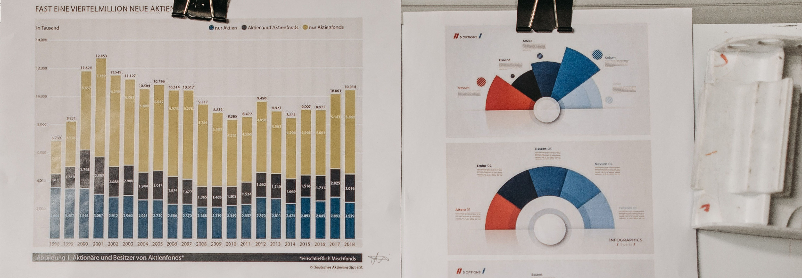

Mapa delictual
Desarrollo de un mapa interactivo que permite reportar incidentes en tiempo real y visualizar zonas con mayor índice de delitos.
Desarrollo de un mapa interactivo que permite reportar incidentes en tiempo real y visualizar zonas con mayor índice de delitos.
Integración de reportes ciudadanos para detectar patrones y mejorar la prevención en zonas específicas.
Diseño de un dashboard para visualizar estadísticas y alertas en tiempo real, facilitando la toma de decisiones.
